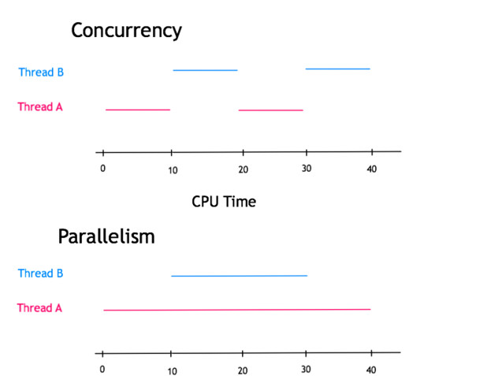

2. Concurrency vs Parallelism
- Parallelism: doing a lot of things at once
- Concurrency: dealing with a lot of things at once

3. Performance
-
Resque vs Sidekiq
- Forking processes is more expensive than creating threads
- Parallelism
- Concurrency
-
Context-switch is cheaper with Threads than processes
-
Ruby context-switch If a thread blocks on I/O (i.e external API)
Context-switch: the process of storing and restoring the state (context) of a process or thread so that execution can be resumed from the same point at a later time. This enables multiple processes to share a single CPU
4. Memory
- Shared address space and memory
- Zombie processes and Garbage Collection
5. Code Threadsafety
- Problem:
-
multiple threads try to modify Shared Data at the same time
- Solution:
-
Lock/Semaphore/Mutex (Mutual Exclusion)
- Mutex:
-
is used to synchronize access to a section of a code, so only one thread at a time can access that code
6. Threadsafety in Ruby
- Ruby:
-
not threadsafe. i.e. Array and Hash
- Rails:
-
request model
-
the vast majority of normal, day-to-day Rails programming is inherently threadsafe
-
danger: global state
7. Ruby Distributions
- MRI: GIL (Global Interpreter Lock)/ GVL (Giant VM Lock)
- GVL basically prevents Parallelism
- GVL basically allows Concurrency
- If you have one thread that's waiting on IO (ie. a DB response), MRI will allow another thread to run in parallel.
-
JRuby/Rubinius
- No Global Lock
- Have fine-grained locks so that their internals are thread-safe
- support both Concurrency and Parallelism
8. What to watch for?
- Class variables
- Instance variables at the class level
- Global variables: $
- Constants
8. What to watch for?
- db pool size - 1 = the number of threads that can run at the same time
- use .freeze on mutables in ruby such as strings:
-
FOO = "foo".freeze to make them immutable and therefore threadsafe
-
after the application has loaded, stop inserting methods into classes dynamically
- Use threadsafe gems
9. Thread.current
class ThreadedLibrary
def self.some_setting= val
Thread.current[:some_setting] = val
end
def self.some_setting
Thread.current[:some_setting] ||= :default
end
end
9. Thread.current
- put shared variables inside Thread.current
- use Thread.current.object_id to namespace it
- Memory leak alert:
-
if Thread dies and get GCed their key/values in the hash are never cleaned up
10. Mutex.synchronize
Wrap shared resource inside a Mutex
semaphore = Mutex.new
a = Thread.new {
semaphore.synchronize {
# access shared resource
}
}
Future
- Replacing GVL with HTM (Hardware Transactional Memory)
- Transactional Memory: allowing a group of load and store instructions to execute in an atomic way